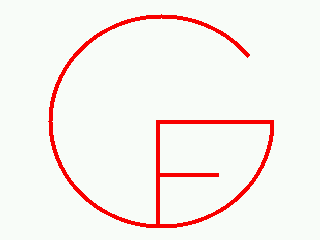

Grammatical Framework
Version 2.4
December 22, 2005.
News
December 22, 2005. GF 2.4 released. Some highlights:
- Speech input.
- Transfer modules.
- Probabilistic grammars.
See GF history for more details.
Download from
SourceForge.
Also see the New Tutorial,
now up to date for version 2.4.
News 2004-2005.
What is GF?
The Grammatical Framework (=GF) is a grammar formalism based on type
theory. It consists of
- a special-purpose programming language
- a compiler of the language
- a generic grammar processor
The compiler reads
GF grammars from user-provided files,
and the generic grammar processor performs
various tasks with the grammars:
- generation
- parsing
- translation
- type checking
- computation
- paraphrasing
- random and exhaustive generation
- syntax editing
GF particularly addresses four aspects of grammars:
- multilinguality (parallel grammars for different languages)
- semantics (semantic conditions of well-formedness, semantic
properties of expressions)
- modularity and grammar engineering
- reuse of grammars in different formats and as software components
GF provides an easy way to experiment with grammars written in
different formats, including the ubiquitous BNF and EBNF formats.
The GF compilation chart gives a
summary of the supported input and output formats (the nodes in ellipses).
For instance, if you want to create a finite-state automaton
in the HTK SLF format (to use for speech recognition), all you have to do
is to write an EBNF grammar in a file foo.ebnf and type
echo "pg -printer=slf" | gf foo.ebnf
License
GF is open-source software licensed under
GNU General Public License (GPL).
Examples and demos
Numeral
translator: recognizes and generates
numbers from 1 to 999,999 in 80 languages.
(The link goes to a live applet, which requires
Java 1.5 plugin.
Here is an example, which does
not require the plugin.)
Letter
editor:
write simple letters in English, Finnish,
French, Swedish, and Russian with a few mouse clicks.
Demo film
of a multimodal dialogue system built with embedded grammars.
Resource grammar library:
basic structures of ten languages
(Danish, English, Finnish, French, German,
Italian, Norwegian, Russian, Spanish, Swedish).
Resource grammars can be used as libraries for writing GF
applications,
but they can also be useful for language training.
Executable programs
GF is available for
several platforms: Linux, Mac OS X, Microsoft Windows, and Sun OS.
To get GF, go to the
Download Page
(at SourceForge).
Quick start
When you have downloaded and installed GF, you can try one of the
quick start examples.
Source code
The main part of GF is written in
Haskell.
The platform-independent graphical user interface is written in
Java.
The
Download Page (at SourceForge) gives links to source and binary packages, as well as
information on compiler requirements.
The publicly accessible
Darcs repository
has the latest sources and documents.
For Java programmers: GF grammars can be embedded in Java programs by using the
Embedded GF Interpreter.
Documents
See the Documentation page.
Projects and events
TALK = Tools for Ambient Linguistic
Knowledge. GF is used in implementing multimodal and multilingual dialogue systems.
KeY project on Integrated Deductive
Software Design. GF is used for
authoring informal and formal specifications. More details on the GF
application
here.
WebALT,
Web Advanced Learning Technologies. GF is used as for generating multilingual
teaching material.
Project Efficient
at Tudor Institute, Luxembourg, "atelier de prototypage de transactions d'e-commerce".
GF is used as an authoring tool for business models.
An introductory course on GF was given at the
ESSLLI summer school
in Vienna 2003.
Miscellaneous
Gramlets:
GF grammars compiled to Java applets.
GFCC:
report on a compiler from a fragment of C to JVM, written in GF.
The compiler source code can be found in the directory
examples/gfcc in the GF grammar library
(see GF download page).
An early version of the GF Home Page
last updated for GF, Version 1.2, 2003.
The original
GF Xerox Home Page
with the oldest releases of and documents on GF, up to Version 0.54, 1999,
does not seem to exist any more.
Earlier application:
Natural-Language Interface to the proof editor Alfa.
The BNF Converter.
A GF spin-off customized for the description of programming
languages.
The Functional
Morphology project. Creating infrastructure for GF and other
linguistic applications.
Authors
The
Languge Technology Group.
More details on the
Authors and Acknowledgements page.
Implementation project
Want to become a GF developer? Contact
Aarne Ranta.
Or just get the sources and start hacking.
Last modified by
Aarne Ranta,
December 22, 2005.